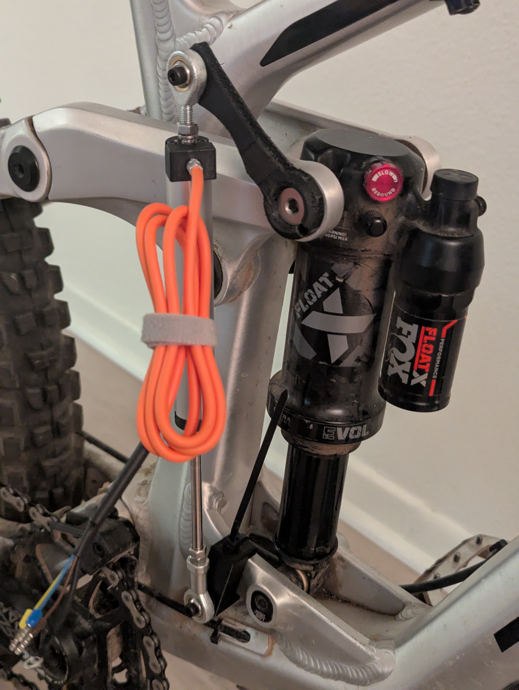
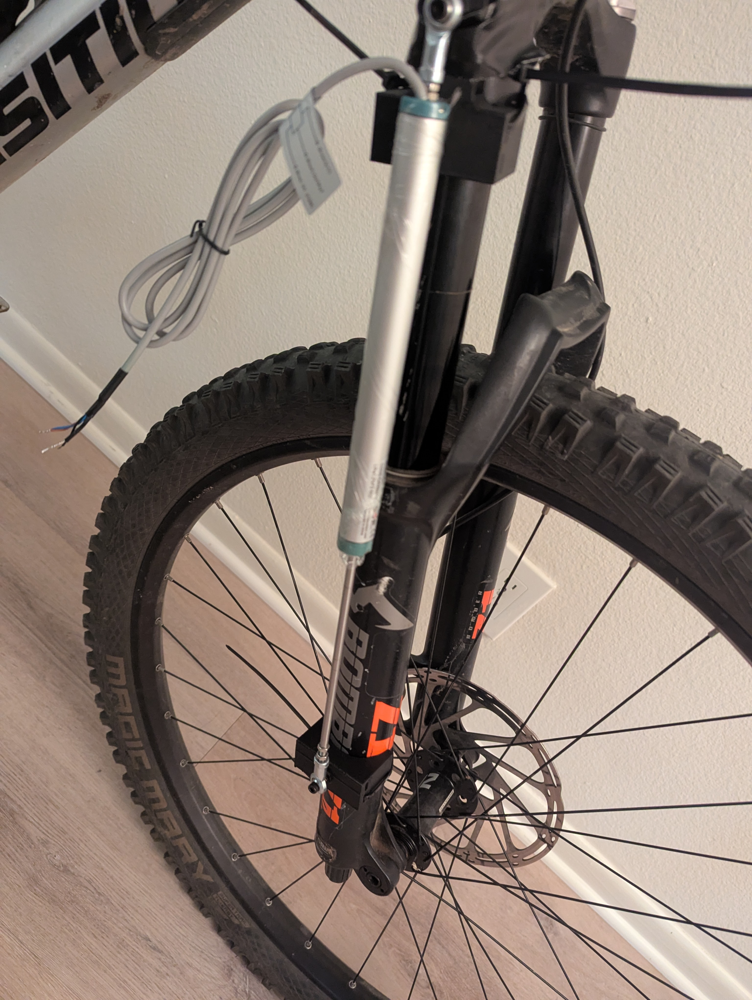
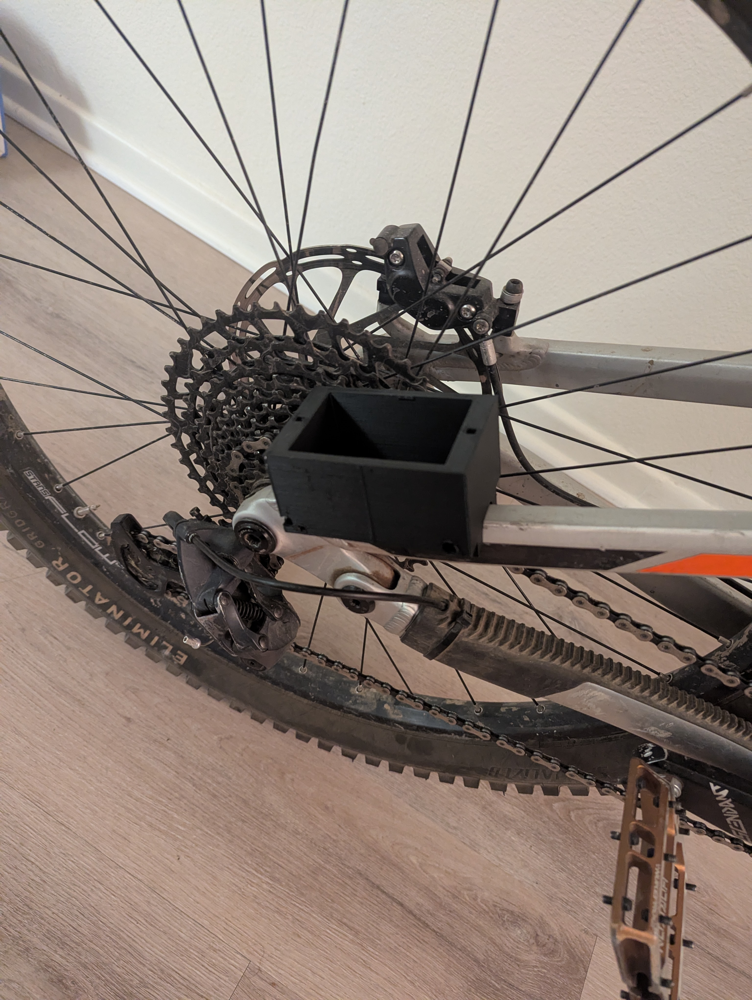

This project involved designing and building a suspension measurement system for a full-suspension mountain bike. The system uses linear potentiometers and a Teensy microcontroller to measure front and rear suspension travel in real time, with data logged to a microSD card for analysis. MATLAB is used to process the measurements and evaluate how changes in unsprung mass affect suspension performance.
The measurement system can be used to fine-tune suspension ride frequency and damping based on a rider’s physique and riding style. However, the primary question I wanted to investigate was how significantly unsprung mass affects suspension performance. This project was motivated by marketing claims that expensive, lightweight suspension components improve ride quality and performance. By measuring the effects of different unsprung masses, I aim to determine how much performance improvement these premium products actually provide and whether the cost is justified.
Design Process
- Potentiometers: To design this, I needed to find a ~160mm linear potentiometer, a ~60mm linear potentiometer, and a way to log the data from them. A 150mm and 75mm linear potentiometer were chosen from Alibaba due to its cost effective nature, it being a relatively simple sensor, and the sensors meeting basic specification requirements such as travel length, maximum speed, and have two heim rod ends for mounting. The potentiometers are resistance based, so as they slide in an out, the signal resistance changes, which is then converted into displacement in the controller code.
- Data Logger:In terms of a microcontroller to log data, an Arduino seems like the obvious choice with lots of online resources, an easy to use IDE, and is something that I am already familiar with. A downside of the Arduino is its sample rate, which reliably caps out at around 500 Hz. However, this does not account for the fact that I need to also log time stamps, convert the analog signal into displacement, and format the data onto a SD card. All of this takes processing resources, leading a to a lower sample rate. Although some consumer grade measurement systems measure at 200 Hz, it is good practice to have a sample rate of 10x of your highest vibration frequency, which for mountain bikes, is around 100 Hz. So to achieve a 1000 Hz sample rate, I am using a Teensy 4.1 microcontroller. The Teensy 4.1 is a better option because its 600 MHz processor, higher-resolution ADC, and greater memory provide significantly more capability for high-speed suspension measurements. Its built-in microSD interface also allows the system to save data directly without requiring an external storage module, while its compact size makes it easier to mount on a mountain bike. These advantages provide more headroom for timestamping, processing, and logging two potentiometer signals while maintaining a higher and more consistent sample rate.
- Mounting: In order to mount the linear potentiometers and Teensy onto the bike, I designed from scratch 3D printed mounting systems for every component. The mounts utilize existing bolts on the bike, as well as zipties to stay constrained during riding.
- Testing and Design of Experiment:
- Data Analysis: The raw data from the potentiometer will output a time stamp as well as the displacement of the potentiometer at that given time. These values can then be integrated into velocity and acceleration with time stamps. From here a simple low pass filter can be used in order to filter out all of the noise. Since I know that the maximum frequency being measured from using a mountain bike is around 100 Hz, I can effectively cutoff all the noise above 100 Hz so my data is accurate. Using time, displacement, velocity, and acceleration, I can then create different relationships that show specific suspension behavior. One of these is a suspension histogram, which shows the percentage of time that a suspension is at in its travel. I can also do a similar thing with veloctiy to see how the differences in the speed the suspension compresses and rebounds. I can also use the mean or RMS acceleration and compare those values with the theory that higher acceleration leads to better suspension tracking and performance.
Final Result
- TBD


